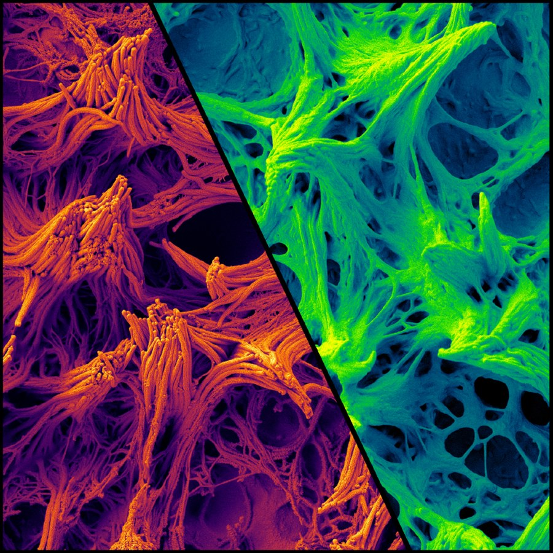
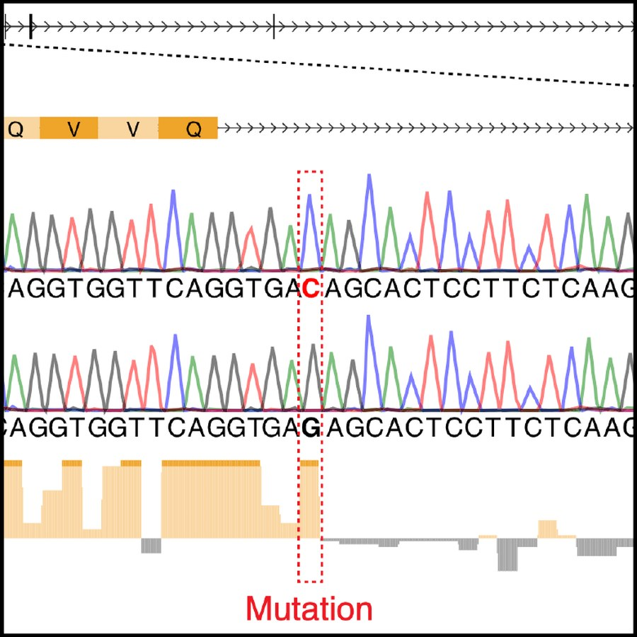
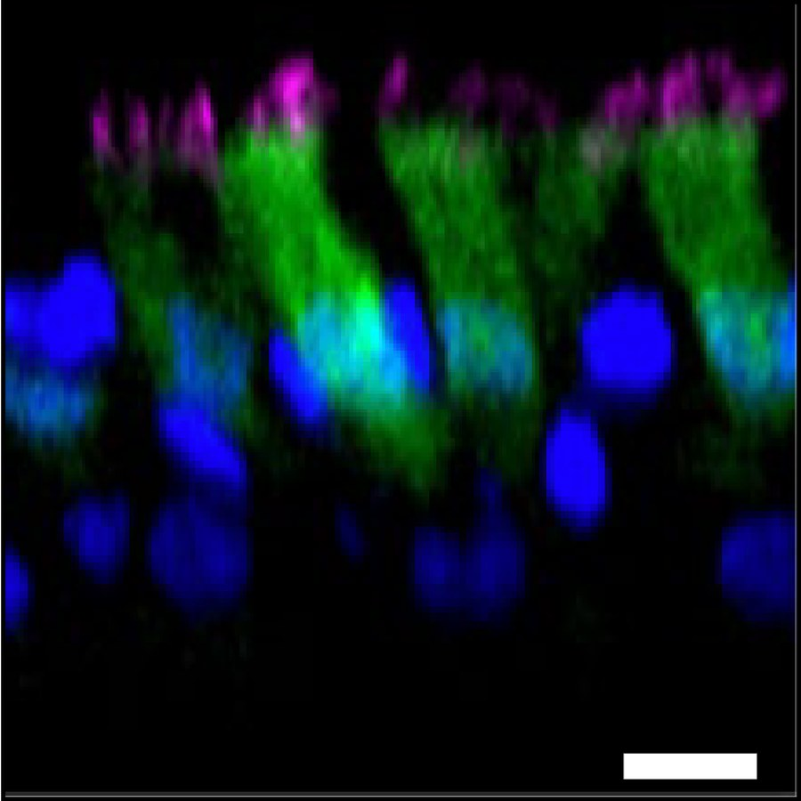

Familial bronchiectasis
Bronchiectasis describes a family of related pulmonary disorders caused by failure of airway mucociliary clearance. In most cases the underlying cause remains unknown and there are few effective therapies. We are leveraging familial forms of the disease to identify genetic mechanisms that initiate and exacerbate bronchiectasis. In earlier work, we showed that loss of a previously orphan protein kinase, NEK10, causes bronchiectasis through defects in the growth and assembly of airway cilia, the specialized organelles that drive mucociliary clearance. We continue to work on the molecular basis of this and other forms of Mendelian airway disease using molecular genetics and biochemistry in airway culture systems.